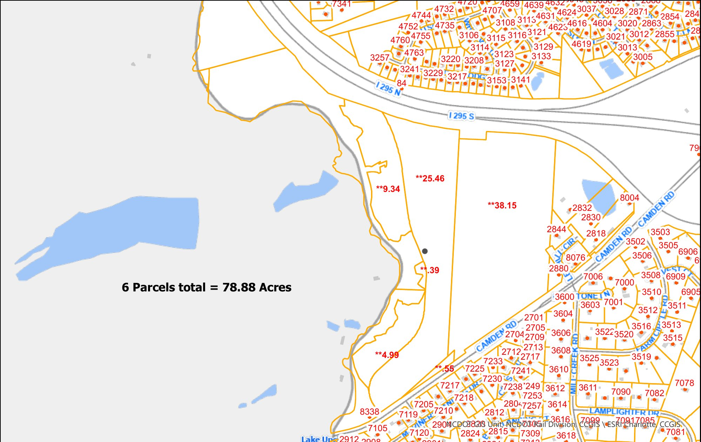
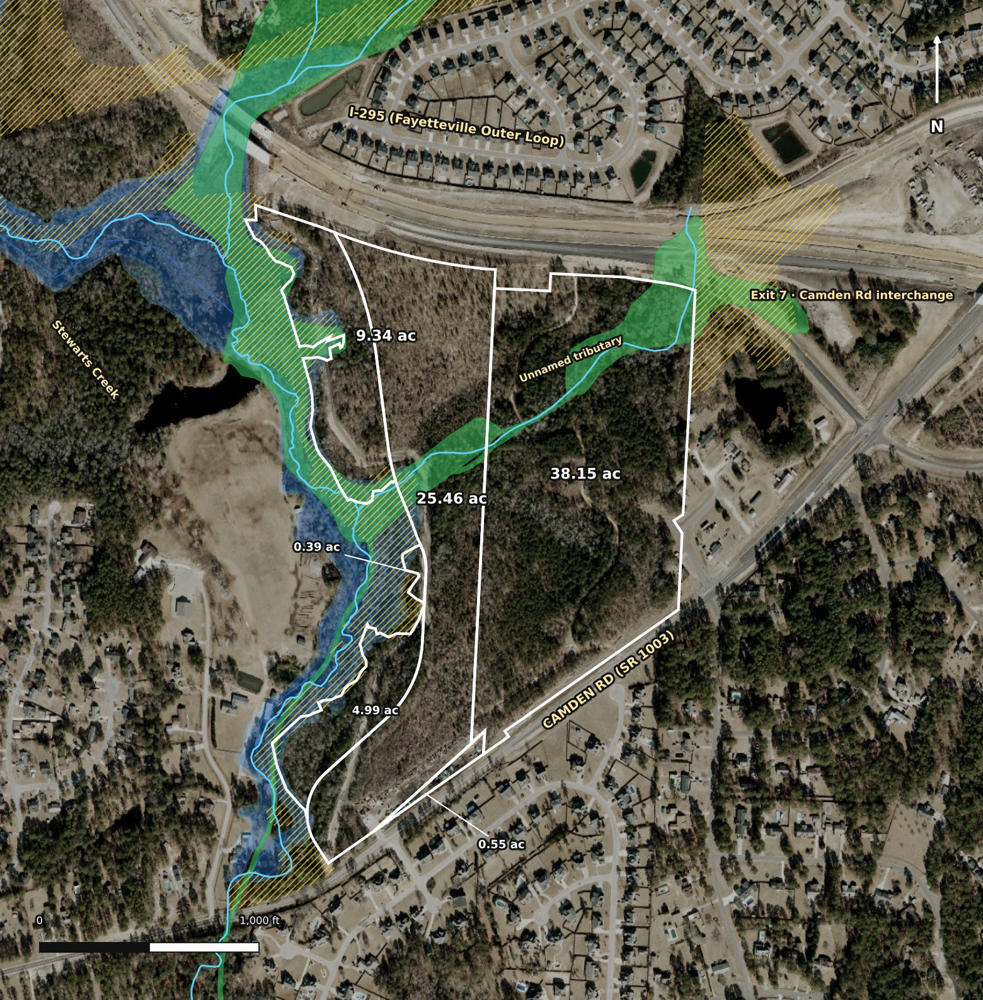

Camden Glen South — 78.9 Acres, 171 Lots, Residential Only — Broker Price Opinion

This report values six adjoining parcels owned by Camden Glen Development, LLC, sold together as one tract. The land sits between I-295 (the Fayetteville Outer Loop) on the north and Camden Rd (SR 1003) on the south, at the Exit 7 interchange, in unincorporated Cumberland County. It totals 78.88 acres by county record. Most of it is already zoned R7.5 single-family, and it is wooded upland with about 51 ft of fall toward Stewarts Creek. An unnamed creek runs through the middle. Mapped wetlands, flood zones and conservation zoning cover about 7.6 acres (about 10%), mostly along the creeks. The seller reports that the site can yield only 171 single-family lots. This version assumes those 171 lots are the only development: no commercial outparcels can be built on the Camden Rd frontage.
The price opinion of $2,700,000 is about $34,200 per gross acre and about $15,800 per lot. It values the 74.9 acres that carry the 171 lots at $36,000 per acre. The roughly 4 acres of Camden Rd frontage near the Exit 7 ramps get only a nominal value as entrance, buffer and stormwater land, since no commercial use is assumed. A companion report, which counts two commercial outparcels, reaches $3,300,000. It reflects the newly completed I-295 loop, the Target-anchored Camden Commons and the Publix-anchored Rockfish Village nearby. The recommended list price is $3,100,000. This is a broker’s opinion of value for marketing purposes, not a certified USPAP appraisal.
The six parcels
| Parcel (PIN) | Acres | Zoning | Road access | Mapped constraints (ac) | County value |
|---|---|---|---|---|---|
| 9494-02-5563 | 38.15 | R7.5 | About 1,100 ft on Camden Rd; north line on I-295 and its ramp | 3.37 | $1,064,973 |
| 9484-92-7453 | 25.46 | R7.5 + CD | About 900 ft on Camden Rd through the 0.55-ac strip | 1.75 | $748,882 |
| 9484-92-3491 | 9.34 | R7.5 / CD / RR | Interior; reached through 25.46 | 1.88 | $244,274 |
| 9484-90-4767 | 4.99 | R7.5 + CD | Interior; reached through 25.46 | 0.52 | $161,687 |
| 9484-90-9419 | 0.55 | R7.5 | Strip along Camden Rd | 0.00 | $5,000 |
| 9484-91-7471 | 0.39 | R7.5 + CD | Interior sliver | 0.08 | $15,725 |
| Total, 6 parcels | 78.88 | About 2,000 ft on Camden Rd (GIS estimate) | ≈7.6 | $2,240,541 |
Parcel numbers link to the Cumberland County tax record. Constraint acres combine mapped wetlands, the FEMA 100-year flood zone and CD conservation zoning, without double counting. Road frontage was measured from county GIS and needs a survey.
Subject property summary
Sources: Cumberland County tax records (linked above) and the Cumberland County GIS parcel, zoning and school district layers; the Hope Mills Area Land Use Plan (pages 28, 40 and 66–70), as reported adopted by the Fayetteville Observer. The property was not inspected for this report.
What the owner paid
| Purchase | Land | Recorded price | In today’s dollars |
|---|---|---|---|
| 6/30/2006 — Harold Kidd, Joseph Gillis and Douglas Barfield from Blue Sky Timber Properties (Book 7286, Page 655) | The original Kidd tract, now the 38.15-ac parcel. The 2007 rezoning listed these owners with 71 acres here, so the deed likely also covered land later taken for I-295. | $1,187,000 | About $1,974,500 |
| 4/22/2008 — William Witiak Jr. to Camden Glen Development (Book 7868, Page 571) | 25.46 ac and the 0.55-ac strip. Witiak had owned the 25.46 ac since 1991 and paid $25,000 for the 0.55 ac in 12/2007. | No price recorded ($0 stamps) | — |
| 4/22/2008 — Kidd, Gillis and Barfield to Camden Glen Development (Book 7868, Page 574) | The 38.15 ac, moved into the LLC | No price recorded ($0 stamps) | — |
| 4/5/2024 — James Sessoms and Belinda Lee to Camden Glen Development (Book 11943, Page 228) | 9.34, 4.99 and 0.39 ac (14.72 ac) on the west side | $368,000 (about $25,000/ac) | About $396,100 |
| Total recorded | All six parcels | $1,555,000 | About $2,370,600 |
The deed record does not show a full cost for the site. The 2008 transfers carried no excise stamps, so the price for the 25.46 and 0.55-ac parcels (or the value of any land contributed by a member) is not public. The 2006 price also likely covered more land than the 38.15 ac that remain, since part of the original tract went to NCDOT for I-295. Any Map Act or right-of-way payment from NCDOT is not in the tax record. Inflation uses the CPI-U for each purchase month (June 2006: 202.9; April 2024: 313.5) through October 2026 (337.511), per the BLS October 2026 CPI release. Deed history: county records for 38.15 ac, 25.46 ac, 0.55 ac and 9.34 ac. Against the $2,700,000 opinion of value, the recorded cost of about $2.37 million in today’s dollars implies a real gain of about 14%, before taxes and carrying costs since 2006.
Site constraints map

- Mapped wetlands (NWI)
- FEMA 100-year flood zone
- 500-year flood zone
- CD conservation zoning
- Creeks
| Item | Finding | What it means |
|---|---|---|
| Mapped wetlands | About 6.1 ac (National Wetlands Inventory), mostly along the creek through the 38.15 and 25.46-ac tracts and the west edge | Wetlands can’t be built on without a federal permit. NWI maps are not exact and often understate wetlands. A field delineation by a consultant, confirmed by the Corps of Engineers, is needed. |
| Flood zones | About 2.1 ac in the FEMA 100-year zone (0.02 ac floodway) and 1.6 ac in the 500-year zone, along Stewarts Creek on the west side | Lots stay out of the 100-year zone. The 2008 rezoning kept these areas in CD. |
| Conservation zoning (CD) | About 2.6 ac, mostly on the west strips | No lots. Usable for open space and stormwater. |
| Creek through the site | An unnamed tributary of Stewarts Creek runs about 1,800 ft diagonally across the two main tracts | The site splits into a north and a south section. Connecting them takes at least one road crossing with a culvert and a wetland permit. Stream buffers also apply. |
| Topography | Ground elevation runs from about 182 ft near Camden Rd to about 131 ft at Stewarts Creek. About 39% of the soils are mapped on 8–15% slopes. | Rolling ground means more grading, but it also helps sewer drain by gravity toward the creek. |
| Soils | Well-drained sandy upland soils (Blaney, Gilead, Candor, Lakeland, Autryville). No hydric soils are mapped. | Generally good for roads and houses. |
| Utilities | PWC water and sewer lines are mapped about 320–400 ft north, across I-295. The 2007 and 2008 county staff reports said public utilities were available but would need to be extended. | A buyer will need a PWC availability letter and an extension route. A creek-side sewer outfall or a pump station may be needed. This is the biggest cost item to check. |
| Access | About 2,000 ft of combined frontage on Camden Rd, a major road. The north line runs along I-295 and its Exit 7 ramp, which have no access. | Driveways near the interchange ramps will need NCDOT approval and may be restricted. The best entrances are likely farther southwest on Camden Rd. |
Sources: Cumberland County GIS wetland, flood, hydrology, soils, zoning and PWC utility layers; USGS elevation points. The 2007 and 2008 staff reports are linked in the zoning section.
Zoning and history
- R7.5 is a single-family district. The county ordinance says it is “designed primarily for single-family dwellings on lots with a lot area of 7,500 square feet or above.” Lots must be at least 75 ft wide, with 30-ft front, 10-ft side and 15-ft rear setbacks and a 35-ft height limit (Cumberland County Zoning Ordinance).
- 2007 rezoning (P07-76). 71 acres on the north side of Camden Rd were rezoned from RR and CD to R7.5, approved unanimously. Staff noted that about 6.3 acres fell inside the Outer Loop corridor and estimated a theoretical R7.5 yield of 300–337 lots (October 2007 planning board packet; November 2007 commissioners’ agenda).
- 2008 rezoning (P08-45). 48.32 acres owned by Camden Glen Development were rezoned to R7.5 outside the flood zone. The flood zone areas stayed CD (September 2008 planning board minutes).
- 2011 rezoning (P11-30). 14.40 acres northwest of Camden Rd, owned by NCDOT and Camden Glen, were rezoned from CD and RR to R7.5 (July 2011 agenda).
- Outer Loop history. Camden Glen Development, LLC was a plaintiff against NCDOT under the Map Act (16 CVS 1734), part of the group of Outer Loop corridor cases (NC General Assembly report; NC appellate docket). I-295 has since been built along the north line. A title review should confirm any right-of-way conveyed to NCDOT and that the case is closed.
- What a buyer can do now. A single-family subdivision at R7.5 can go through county subdivision review without a rezoning. Townhomes or apartments would need a planned or conditional rezoning, which this report does not assume.
Lot yield
| Step | Acres | Note |
|---|---|---|
| Gross land | 78.88 | County acreage |
| Less mapped wetlands, flood zone and CD | −7.6 | Combined footprint, no double counting |
| Less stream buffers, the creek crossing and odd shapes | −4 to −7 | West strips, the I-295 edge and the small parcels |
| Net buildable land | About 64–67 | Before roads and stormwater |
| Broker estimate at 3.0–3.6 lots per net acre | About 200–240 lots | Typical for 7,500–9,000 SF lots after roads, ponds and open space. Not used for value. |
| Seller’s reported yield (used for value) | 74.88 residential ac | 171 lots, about 2.3 per residential acre and 2.6–2.7 per net buildable acre |
Nearby Peartree West recorded 131 lots on 53.57 acres (about 2.4 lots per gross acre). At 2.5–3.0 lots per gross acre, this site would yield about 200–235 lots. The county’s 2007 estimate of 300–337 lots was a zoning maximum with no deductions and is not used. A field wetland delineation could change the yield either way. Setting aside about 4 acres of frontage for two commercial outparcels, as the companion report does, would trim the residential yield to about 190–230 lots. The seller now reports that only 171 lots can be achieved. That is about 18% below the 210-lot midpoint of the broker estimate and below Peartree West’s density. The seller’s count is used for value because it likely reflects site information this desktop review does not have, such as a sketch plan, a wetland or buffer finding, sewer routing or larger lots. This version assumes the 171 lots are the whole development, with no commercial outparcels. The frontage that the companion report sets aside for commercial use becomes entrance, buffer and stormwater land and adds no lots.
Methodology
- Approach. The site is valued as residential land only. The land that carries the 171 lots uses sales comparison on price per gross acre, from closed sales of development land in Cumberland County from 2023 to 2026, with a per-lot cross-check. The roughly 4 acres of frontage that produce no lots get a nominal value. No commercial value is included.
- Sources. Sale prices come from county deed excise stamps ($2 per $1,000) in the county’s sales records. Lot counts and project details come from developer sites and city reports. No comps came from the owner.
- Comp selection. Tracts of 20–68 acres bought by homebuilders and land developers. Very rural sales, very distant sales, and sales that did not look arm’s-length were left out of the matrix but are discussed under counter-evidence.
- Adjustments. Each sale is adjusted for time (about 2% a year), size, entitlement status, zoning density, utilities, mapped constraints, site conditions and location. The percentages are the broker’s professional judgment.
Comparable land sales
| Comp property | Acres | Zoning | Sale date | Price | $/acre | Notes |
|---|---|---|---|---|---|---|
| C1. 0 Graham Rd GCP Graham Road 1 LLC | 45.72 | County R10 | 3/10/2025 | $1,800,000 | $39,370 | Bought for Graham Road Phase 1, a 178-lot single-family cluster plan under review. About 5% mapped constraints. 4.4 mi. |
| C2. 0 Graham Rd (2 parcels) GCP Graham Road 2 LLC | 22.31 | County R10 | 7/25/2025 | $1,050,000 | $47,064 | Second phase next to C1. No mapped constraints. 4.6 mi. |
| C3. 703 Sand Hill Rd, Hope Mills Tamarack Land – McKellar Park LLC | 67.54 | Town R6 | 10/3/2024 | $5,094,000 | $75,422 | McKellar Park, planned for 385 homes on about 56 ac. In town with utilities. About $13,200 per lot. 7.4 mi. |
| C4. 0 Celebration Dr Celebration Drive Holdings LLC | 20.48 | County R6 conditional | 12/6/2023 | $1,320,000 | $64,453 | Conditional zoning in place. About 15% mapped constraints. 7.7 mi. |
| C5. 0 Ramsey St (Coventry Ph 1) McKee Homes LLC | 26.25 | City SF-10 | 10/26/2026 | $1,521,000 | $57,943 | Homebuilder phase takedown in the City of Fayetteville. No mapped constraints. 16.8 mi. |
| C6. 6905 Camden Rd, Hope Mills (2 parcels) Camden Preserve LLC | 53.94 | Town R5 + C2P lot | 8/25/2025 | $3,296,000 | $61,105 | Next to Camden Commons on the same Camden Rd corridor. Annexed into Hope Mills and zoned for single-family in 2022. Includes an older house and a 0.52-ac commercial lot. 2.0 mi. |
Sources: Cumberland County tax records for C1, C2, C3, C4, C5, C6; City of Fayetteville, Development in the City 2025 (Graham Road Phase 1); Tamarack Land, McKellar Park; Hope Mills board minutes, March 2022 (Camden Preserve annexation and zoning). Distances are straight-line from the subject.
Adjustment matrix
Each sale is adjusted to the subject: 78.88 acres of wooded, rolling land, mostly zoned R7.5 with no subdivision plan approved yet, about 10% mapped constraints, a creek crossing needed inside the site, water and sewer that must be extended, and a seller-reported yield of 171 lots.
| Comp property | Unadj. $/acre | Net Adj. % | What was adjusted | Adj. $/acre |
|---|---|---|---|---|
| C1. GCP Graham Road 1 LLC — 0 Graham Rd | $39,370 | −20% | Time, 20 mo (+3%); Size, smaller tract (−3%); Zoning: R10 vs. subject R7.5 (lower density) (+5%); Mapped constraints, about 5% vs. 10% (−5%); Site: more open, gentler terrain (−5%); Utilities at or near the site (−10%); Location: subject at I-295 Exit 7 and the Camden Rd retail corridor (+10%); Lot yield: seller reports 171 lots, about 2.3 per residential acre (−15%) | $31,496 |
| C2. GCP Graham Road 2 LLC — 0 Graham Rd (2 parcels) | $47,064 | −32% | Time, 16 mo (+2%); Size, about 28% of subject (−8%); Zoning: R10 (lower density) (+5%); No mapped constraints (−8%); Site: more open terrain (−5%); Utilities at or near the site (−10%); No internal stream crossing (−3%); Location: subject at I-295 Exit 7 and the Camden Rd retail corridor (+10%); Lot yield: seller reports 171 lots, about 2.3 per residential acre (−15%) | $32,004 |
| C3. Tamarack Land – McKellar Park LLC — 703 Sand Hill Rd, Hope Mills | $75,422 | −60% | Time, 25 mo (+4%); Entitled: approved 385-lot plan (−20%); In town, R6 density (−10%); Utilities at the site (−10%); No mapped constraints (−8%); Site: terrain (−3%); No internal stream crossing (−3%); Location: subject at I-295 Exit 7 and the Camden Rd retail corridor (+5%); Lot yield: seller reports 171 lots, about 2.3 per residential acre (−15%) | $30,169 |
| C4. Celebration Drive Holdings LLC — 0 Celebration Dr | $64,453 | −42% | Time, 35 mo (+6%); Size, about 26% of subject (−8%); Conditional zoning already approved (−15%); R6 density (−8%); More constrained, about 15% vs. 10% (+3%); Utilities at or near the site (−10%); Location: subject at I-295 Exit 7 and the Camden Rd retail corridor (+5%); Lot yield: seller reports 171 lots, about 2.3 per residential acre (−15%) | $37,383 |
| C5. McKee Homes LLC — 0 Ramsey St (Coventry Ph 1) | $57,943 | −49% | Time, current (0%); Size, about 33% of subject (−8%); Entitled phase takedown (−15%); City utilities at the site (−10%); No mapped constraints (−8%); Zoning: SF-10 (lower density) (+5%); No internal stream crossing (−3%); Location: subject at I-295 Exit 7 and the Camden Rd retail corridor (+5%); Lot yield: seller reports 171 lots, about 2.3 per residential acre (−15%) | $29,551 |
| C6. Camden Preserve LLC — 6905 Camden Rd, Hope Mills (2 parcels) | $61,105 | −35% | Time, 15 mo (+2%); In town, utilities at or near the site (−10%); R5 density (higher than R7.5) (−5%); Includes a house and a 0.52-ac commercial lot (−7%); Location: same Camden Rd corridor, about 2 mi east (0%); Lot yield: seller reports 171 lots, about 2.3 per residential acre (−15%) | $39,718 |
Adjusted range: about $29,600–$39,700 per acre. Median: about $31,700. Weighted average: about $34,500 per acre (C6 35%, C5 20%, C1 15%, C2, C3 and C4 10% each). C6 gets the most weight: it is the newest large sale on the same Camden Rd corridor, 2 miles east, and needed the smallest adjustments. The location line adds 5–10% to the comps farther from I-295 and the new retail, in the broker’s judgment, for the subject’s position at the Exit 7 interchange of the now-complete loop. Every comp also takes a −15% lot-yield adjustment, because the seller reports 171 lots, against the 200–240 lots the other adjustments assumed. Land value per acre falls by less than the 18% drop in lots, since larger lots sell for more per home, but the entrance, creek crossing and sewer extension are spread over fewer lots. The concluded rate is $36,000 per acre, slightly above the weighted average and just below C4 and C6, the two highest adjusted indications.
Location premium
- I-295 is now complete. The Camden Rd interchange (Exit 7) opened in July 2024, and the full 39-mile Fayetteville Outer Loop opened on November 25, 2025 (NCDOT; NCDOT project highlights). The site has about 2,000 ft of frontage at that interchange.
- New retail to the east on Camden Rd. Camden Commons, about 80 acres at Camden, Rockfish and Waldos Beach Rds, broke ground in July 2026 with a 128,000 SF Target, a second large anchor and nine outparcels. Target is expected to open in 2027 (Fayetteville Observer; BizFayetteville). The Publix-anchored Rockfish Village at Rockfish and King Rds delivers in fall 2026 with 2.4 acres of outparcels (LoopNet listing).
- Road and policy support. Camden Rd is being widened to four lanes from the I-295 interchange east, with completion expected in 2028 (Fayetteville Observer; NCDOT U-3422). The Hope Mills Area Land Use Plan, adopted in September 2026, calls the I-295 corridor “one of the most significant long-term growth areas” and says commercial uses should be “concentrated near key intersections and freeway interchanges, including I-295 (Camden Road and Glenn Road Exits)” (land use plan, pages 40 and 66–67).
- Land buyers are paying more here. Camden Preserve (C6) sold for about $61,100 per acre in 8/2025, two miles east. The Camden Commons developer paid $6,126,000 for 69.92 acres in 8/2025, about $87,600 per acre, for a zoned, center-scale commercial site (Book 12312, Page 213). Branch King Road LLC paid about $64,900 per acre for 64.70 acres of raw land 0.9 mi away in 1/2023.
The location adjustment in the matrix reflects the broker’s judgment of how these changes affect the subject. Home prices in the newer subdivisions nearby were not separately studied, so the premium rests on land sales, not on home values.
Value analysis & opinion of value
| Approach | Basis | Indication |
|---|---|---|
| Residential land, price per acre (primary) | 74.88 ac × $36,000 | $2,695,680 |
| Camden Rd frontage, no lots and no commercial use | About 4.0 ac × $5,000 for entrance, buffer and stormwater | $20,000 |
| Total, sum of the parts | 78.88 ac | $2,715,680 |
| Residential price per lot (cross-check) | 171 lots (seller) × $14,000–$16,500. That is above C3’s entitled $13,200 from 2024, reflecting two years of time, the subject’s location and larger lots. | $2,394,000–$2,821,500 (171 lots × $15,750 = $2,693,250) |
| Reconciled value, all six parcels | Price per acre and price per lot agree closely | $2,700,000 |
| County assessed value | Six parcels | $2,240,541 (reference) |
| Owner’s 2024 purchase | 14.72 ac of the west strips at $25,000/ac | $368,000 (reference) |
The low end (about $32,000 per lot acre, or $14,000 per lot) applies if the delineation finds much more wetland than mapped or sewer needs a long extension or a pump station. The high end (about $38,000 per lot acre, or $17,500 per lot) applies if PWC confirms gravity sewer close by and the wetlands come in near the mapped 6 acres. This opinion is $600,000 below the $3,300,000 companion report, which counts two commercial outparcels on the frontage, and $1,200,000 below the $3,900,000 first estimate at 200–240 lots. If a buyer’s engineer finds more lots, the value rises roughly $15,750 per added lot. If commercial use later proves possible, the companion report applies.
Counter-evidence & upside
- Higher nearby sale. Branch King Road LLC paid $4,200,000 for 64.70 ac of RR land about 0.9 mi away in 1/2023, about $64,900 per acre (county record). The name may suggest a tie to Branch Properties, the Rockfish Village developer, but that is not confirmed, and the buyer’s plans are unknown. It was left out of the matrix because the use and terms could not be confirmed.
- Commercial frontage is not counted. This version gives the Camden Rd frontage no commercial value. The companion report counts two outparcels at about $600,000. A nearby sale shows how cheaply unserviced frontage can trade: GFB Associates III paid $285,000 for 3.74 acres zoned C2P and R5 on Camden Rd next to Camden Commons in 8/2025, about $76,200 per acre (county record). Camden Commons itself traded at about $87,600 per acre for the whole center site. Pad sites sell for more than this only once they are zoned, serviced and have a driveway, which is why the companion report discounts its outparcels 30%.
- Access limits. The widened Camden Rd will have a raised median and reduced-conflict intersections (Fayetteville Observer). NCDOT also restricts driveways near interchange ramps. Either could also limit the subdivision entrance locations.
- Higher asking price. A 27-acre tract on Camden Rd near Hope Mills is listed at $2,500,000, about $92,600 per acre (MLS 747829, Land and Farms). It is an asking price, not a sale, and is closer to Hope Mills with commercial and multifamily potential.
- Lower sales. Freddie McLean, Trustee sold 27.20 ac of rural RR land about 1.7 mi away for $369,500 in 8/2023, about $13,600 per acre (county record). The owner’s own 2024 purchase of the west strips was $25,000 per acre. Both are smaller, rural or heavily constrained, but they show that land without a clear path to sewer sells far lower.
- Wetlands could be larger than mapped. NWI maps are drawn from aerial photos and often miss wetlands under a forest. A larger delineation would cut the lot count.
- Interstate noise. Lots along I-295 and the ramps will need buffering and may sell for less.
- Further upside. If a buyer rezoned part of the site for higher-density housing, as the land use plan allows near the I-295 corridor, or found more than 171 lots, the value could exceed the range. Neither is assumed.
Listing proposal & commission terms
Commission
6% co-brokered — of the gross sale price when a cooperating broker brings the buyer, split under standard commercial co-brokerage practice.
5% in-house — when Grant-Murray Real Estate, LLC brings the buyer directly.
At the $3,100,000 list price: about $186,000 co-brokered or $155,000 in-house. At the $2,700,000 opinion of value: about $162,000 or $135,000.
Price and term
List all six parcels together at $3,100,000 (about $39,300 per acre, or $18,100 per lot), leaving room to negotiate toward the $2,700,000 opinion. Suggested term: 12 months. Expect offers with a 90–180 day due-diligence period, and possibly a lot-count price or phased closings.
Before launch
- Order a wetland delineation and request Corps confirmation, so buyers price on real acreage.
- Request a PWC water and sewer availability letter and a likely extension route.
- Order a boundary survey and confirm any NCDOT right-of-way from the Outer Loop and the Map Act case.
- Get NCDOT feedback on driveway locations on Camden Rd near the Exit 7 ramps and on median openings.
- Get the seller’s 171-lot sketch plan into the offering package, so buyers can test the yield.
Marketing plan
- Offering package with the constraints map, zoning history, utility notes and a lot-yield sketch.
- Direct outreach to builders and land developers active in the Fayetteville market, including McKee Homes, D.R. Horton, Dream Finders Homes, Tamarack Land, GCP and other regional builders.
- Listing on LoopNet, Crexi and the local MLS, and signs on Camden Rd.
- Monthly activity reports to the owner.
Listing broker: Patrick Murray, CCIM, SIOR, Grant-Murray Real Estate, LLC. Final terms, duration and marketing-cost provisions will be set out in a separate written listing agreement.
Limitations
- No inspection or survey. The property was not inspected. Acreage, frontage, topography, wetlands, flood zones and utility locations come from public GIS and USGS data and are approximate.
- Wetlands. Mapped wetlands are not a delineation. The actual wetland area and permit needs can only be set by a field study and the Corps of Engineers.
- No commercial use. This version assumes no commercial lots can be built on the frontage. Commercial use was not tested with the County.
- Lot yield. The value uses the seller’s reported 171 lots, which were not reviewed or confirmed. The 200–240 lot figure is a broker estimate. Neither is an engineered plan or a county approval.
- Utilities and access. Water and sewer availability, capacity and cost were not confirmed with PWC. Driveway locations were not confirmed with NCDOT.
- Comp data. Comp sizes and prices come from Cumberland County records and deed stamps and were not confirmed with buyers or sellers.
- Title and legal. No title search or environmental review was done. The status of the Map Act case and any NCDOT right-of-way were not reviewed.
- This is a broker’s opinion of value for marketing purposes, prepared by Grant-Murray Real Estate, LLC. It is not a certified USPAP appraisal.
Prepared by
Patrick Murray, CCIM, SIOR
Principal / Broker in Charge
Grant-Murray Real Estate, LLC
150 N. McPherson Church Rd
Fayetteville, NC 28303
O: 910.829.1617
patrick@grantmurrayre.com
grantmurrayre.com
Prepared for
Camden Glen Development, LLC
Owner of record
6885 Cliffdale Rd
Fayetteville, NC
This Broker Price Opinion (BPO) is prepared by Patrick Murray, CCIM, SIOR, of Grant-Murray Real Estate, LLC. It is not an appraisal and is not a certified valuation under USPAP. The conclusion uses the sales comparison approach on independently researched closed land sales, with a per-lot cross-check. Adjustments reflect the broker’s professional judgment.